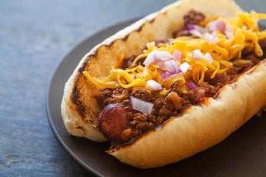

Hotdog

Description
The Chicago Dog is a Windy City classic, and a big favorite with sports fans! The frank must be all-beef, the bun must be poppyseed, the ingredients must be piled onto the bun in the order specified. And whatever you do, don't spoil the splendor with ketchup!
Ingredients
- pain
- sausage
- ketchup and mayo
Steps
- Bring a pot of water to a boil. Reduce heat to low, place hot dog in water, and cook 5 minutes or until done.
- Place hot dog in the steamed bun. Pile on the toppings in this order: yellow mustard, sweet green pickle relish, onion, tomato wedges, pickle spear, sport peppers, and celery salt.
- The tomatoes should be nestled between the hot dog and the top of the bun. Place the pickle between the hot dog and the bottom of the bun. Don't even think about ketchup!